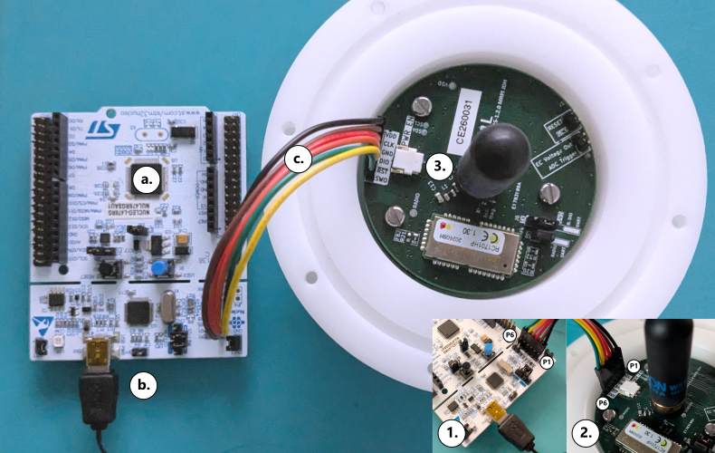
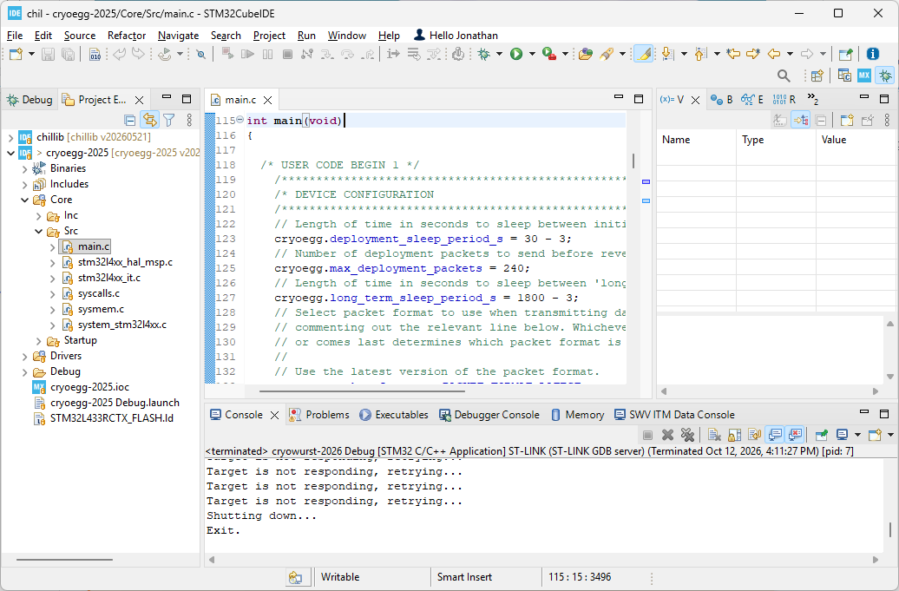
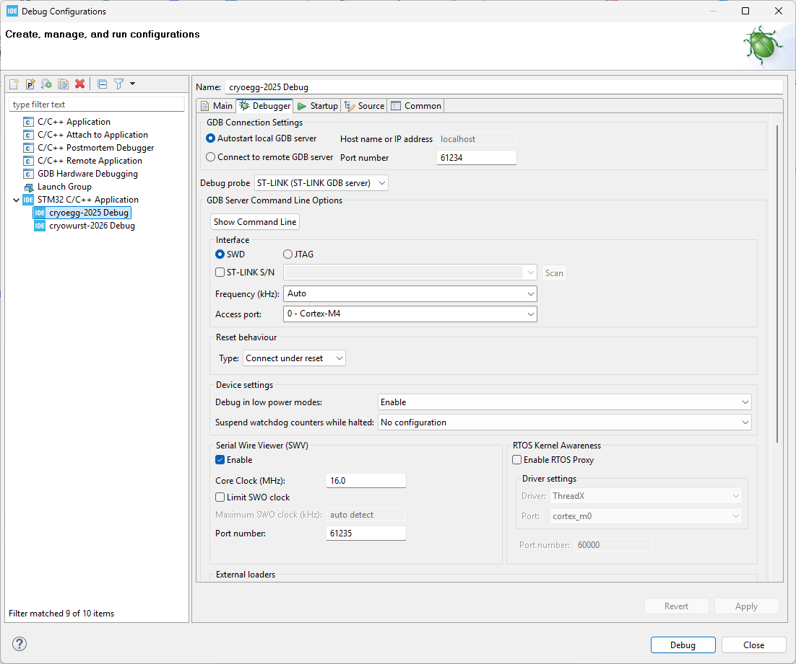
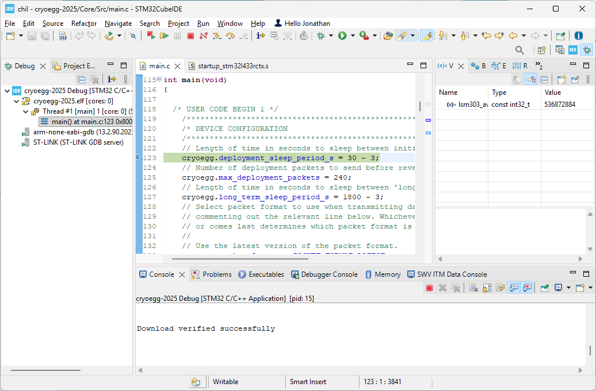
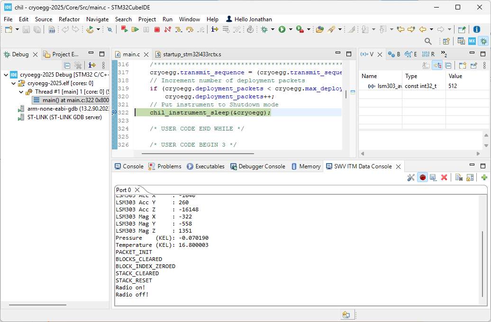

Firmware and programming#
Firmware#
The latest source code for the Cryoegg firmware is stored on GitHub here: CHILCardiff/cryoegg-2026. At present, we do not provide pre-compiled .elf files to program the instrument using STM32CubeProgrammer or similar binary flashing tools.
You should already have downloaded the latest version of the firmware for Cryoegg when setting up your CHIL development environment.
Programming using STM32CubeIDE#
The following section describes the equipment required and necessary steps to program the Cryoegg sensor. Programming the sensor allows the user to change the measurement interval, number of deployment packets and radio packet version used.
Equipment#
To program the Cryoegg, you will need the items shown below in addition to an assembled Cryoegg motherboard, power switch and batteries.
STMicroelectronics Nucleo-L476RG development board.
USB-A to Micro-USB or Mini-USB cable (check board type).
6-way 2.54mm header cable.
Steps#

Fig. 50 Connecting the Cryoegg (2026) to the STLINK-V3 programmer.#
Connect the Nucleo development board to to your PC using the USB cable.
Connect the 6-way 2.54mm header cable to the Nucleo development board Figure 50.1.
Connect the 6-way 2.54mm header cable to the Cryoegg Figure 50.2.
Important
Ensure that P1 on the Nulceo development board is connected to P1 (Vdd) on the Cryoegg. You can use the colours of the cable to check this.
Connect a power switch (
POWER_EN, Figure 50.3). You are now ready to program the Cryoegg.
The following steps assume you have set up your the CHIL development environment. If not, follow the setup instructions and then return to this step when completed.
Open STM32CubeIDE and ensure that the
cryoegg-2025andchillibprojects are open (check by right-clicking in the Project Explorer window).

Fig. 51 STM32CubeIDE development environment and Cryoegg configuration settings.#
Find
Core/Src/main.cin the Project Explorer and open the file. Scroll down to theint main(void)function (Line 116 at time of writing). This section defines the deployment behaviour of the instrument. If you wish to modify the behaviour, update these values inmain.c. Each value is described below in the table below:
Varible name |
Description |
Units |
Default value |
|---|---|---|---|
|
The time period in seconds to sleep between each deployment measurement. |
seconds |
|
|
The total number of packets to send before entering long term deployment mode (max. value of 255). |
N/A |
|
|
The time period in seconds to sleep between each measurement. |
seconds |
|
Note
When defining sleep periods, account for the time period the instrument takes to make each measurement by subtracting 3 seconds from the desired value. For example, to have a deployment interval of 30 seconds, set deployment_sleep_period_s = 27.
Open the Debug Configurations dialog box from
Run > Debug Configurationsin the top menu bar.

Fig. 52 Debug Configuration settings to program the Cryoegg using STM32CubeIDE.#
If there is no configuration available under STM32 C/C++ Application and ensure that the Debugger settings match those in Figure 52.
When you are ready to program the Cryoegg, press the Debug button in the Debug Configurations dialog box.

Fig. 53 Code execution paused in debug mode after successful programing of Cryoegg.#
If you succesfully program the Cryoegg, you should see output in the Console which matches Figure 53. The programmer has halted execution of the program at the start of the main function. At this point, you can choose to:
Disconnect the programmer and power from the Cryoegg and test it at a later date.
Continue to run the program and check sensor outputs (see Step 11) by pressing the resume icon (pink arrow in Figure 53).
Open the Serial Wire Viewer Output window to check the instrument is working. If you have not previously configured the Serial Wire Viewer, follow the instructions here.

Fig. 54 Output from Cryoegg in the SWV ITM Data Console.#
You have now succesfully programmed the Cryoegg for deployment. We recommend powering off the instrument and restarting it without the programming cable inserted before deployment.
Tip
See here for how to manually reset or adjust the value of deployment_packets.
The next sections describe the CHIL dataloggers which can be used to validate that the instruments are performing correctly before deployment.